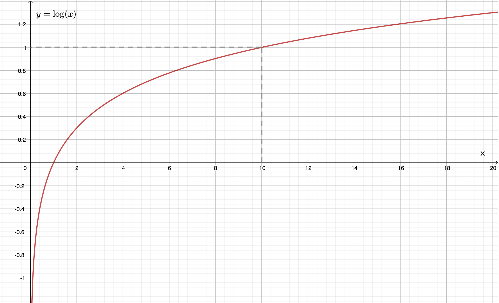
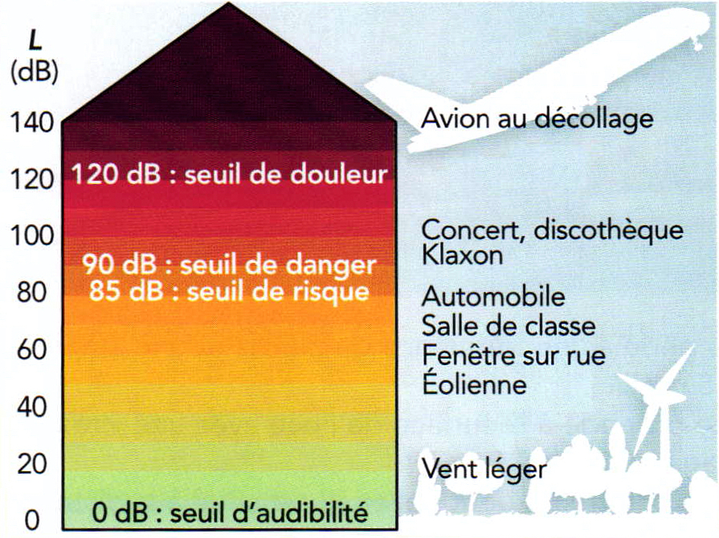

Point mathématique : le logarithme décimal
Logarithme
Le logarithme décimal est la fonction réciproque de la fonction $f$ telle que $f(x) = 10^x$ : [ \forall x>0, y = \log (x) \Leftrightarrow x = 10^y ] Le logarithme décimal est une fonction croissante et continue. De plus, [ \lim_{x \to 0^+} = -\infty \text{ et } \lim_{x \to \infty} = +\infty ]

Graphique de la fonction « logarithme décimal »
- Commenter l’évolution de la pente de la tangente à la fonction « logarithme décimal » lorsque la valeur de la variable $x$ augmente.
Réponse
La pente, ou coefficient directeur, de la tangente diminue lorsque la variable $x$ augmente.
- En déduire comment compléter la phrase suivante : « Pour une variation $\Delta x$ donnée, plus $x$ est grand ……………………… augmente $\log(x)$ (ou plus $\Delta\log (x)$ est ………………..) ».
Réponse
La pente de la tangente est égale à la valeur de la dérivée de la fonction au point considéré, donc :
- moins vite
- petit
Propriétés du logarithme décimal
Le logarithme (décimal) est la fonction qui transforme un produit en somme et qui vaut 1 en 10. Ainsi, $$ \log(a\cdot b) = \log(a) + \log(b) $$
$$ \log(10^1) = 1 $$
En utilisant seulement les propriétés du logarithm décimal énoncées ci-dessus, développer les expressions suivantes :
- $\log(a^n) = \ldots$
Réponse
$ \log(a^n) = \log(\overbrace{a\times \ldots \times a}^{n \text{fois}}) = \log(a) + \ldots + \log(a) = n\, \log(a)$
- $\log(a/b) = \ldots $
Réponse
$\log(a/b) = \log(a \cdot b^{-1}) = \log(a) + \log(b^{-1}) = \log(a) - \log(b)$
- $\log(1) = \ldots $
Réponse
$\log(1) = \log(10^0) = 0 \times \log(10) = 0$
- $\log(1000) = \ldots $
Réponse
$\log (1000) \log (10^3) = 3 \times \log(10) = 3$
- $\log(\pu{0.01}) = \ldots $
Réponse
$\log(\pu{0.01}) = \log(10^{-2}) = -2 \times \log(10) = -2$
- Si $x$ est multiplié par 100, alors il faut …………………. …………….. au logarithme de $x$ pour trouver le logarithme du nouveau nombre ($100\, x$).
Réponse
Si $y = 100\, x$, $\log (y) = \log (100\, x) = \log(100) + \log (x) = \log(10^2) + \log(x) = 2 + \log (x)$. Il faut donc « ajouter 2 au $\ldots$ ».
- Si $x$ est multiplié par 100000, alors il faut …………………. …………….. au logarithme de $x$ pour trouver le logarithme du nouveau nombre ($100000\, x$).
Réponse
Si $y = 100000\, x$, $\log (y) = \log (100000\, x) = \log(100000) + \log (x) = \log(10^5) + \log(x) = 5 + \log (x)$. Il faut donc « ajouter 5 au $\ldots$ ».
- Si $x$ est divisé par 1000, alors il faut …………………. …………….. au logarithme de $x$ pour trouver le logarithme du nouveau nombre ($x/1000$).
Réponse
Si $y = \dfrac{x}{1000}$, $\log (y) = \log (\dfrac{x}{1000}) = \log (x) - \log(1000) = \log (x) - \log(10^3) = \log (x) - 3$. Il faut donc « retirer 3 au $\ldots$ ».
- Si $x$ est divisé par 10, alors il faut …………………. …………….. au logarithme de $x$ pour trouver le logarithme du nouveau nombre ($x/10$).
Réponse
Si $y = \dfrac{x}{10}$, $\log (y) = \log (\dfrac{x}{10}) = \log (x) - \log(10) = \log (x) - \log(10^1) = \log (x) - 1$. Il faut donc « retirer 1 au $\ldots$ ».
Application
On peut trouver très facilement une approximation, du nombre $\log(x)$ en utilisant, pour $x$ , la notation scientifique.
- Sachant que $\log(\pu{1,2}) = \pu{0,079}$, calculer, sans calculatrice, la valeur de $\log(120)$ : $\ldots$
Réponse
$\log (120) = \log (\pu{1,2e2}) = \log (\pu{1,2}) + \log (10^2) = \pu{0,079} + 2 = 2,079$.
- Sachant que $\log (\pu{3,14}) = \pu{0,497}$, calculer, sans calculatrice, la valeur de $\log(\pu{0,00314})$ : $\ldots$
Réponse
$\log (\pu{0,00314}) = \log (\pu{3,14e-3}) = \log (\pu{3,14}) + \log (10^{-3}) = \pu{0,497} -3 = -\pu{2,503}$.
Intensité sonore, niveau sonore
Intensité sonore
L’intensité sonore caractérise la puissance énergétique de l’onde en un point de l’espace, c’est à dire l’énergie que peut transmettre, chaque seconde, l’onde à un récepteur placé en ce point.
L’intensité sonore est donc une puissance surfacique et elle s’exprime en watt par mètre carré ($\pu{W/m2})$.
L’intensité sonore perceptible par l’oreille humaine est comprise entre une valeur minimale $I_0 = \pu{1,00e-12 W/m2}$ (seuil d’audition) et une valeur maximale (seuil de douleur) $I_{\text{max}} = \pu{25 W/m2}$.
Niveau d’intensité sonore
La sensation physiologique au niveau de l’oreille n’évolue pas proportionnellement à l’intensité sonore, car l’oreille n’est pas un récepteur linéaire.
Pour traduire correctement cette sensation physiologique, on définit donc une grandeur appelée niveau d’intensité sonore $L$ telle que : [ L = 10 \log \left( \dfrac{I}{I_0} \right) ] avec $I_0 = \pu{1,00e-12 W/m2}$. L’unité de $L$ est le décibel, de symbole $\pu{dB}$.
Le niveau sonore présente donc deux particularités :
- Il est relatif à la sensibilité de l’oreille humaine ;
- Son évolution est logarithmique.
- Si $I$ est multipliée par 100, alors le niveau sonore …………………. …………….. dB.
Réponse
Si $I’ = 100\, I$, $L’ = 10 \log \left( \dfrac{100\, I}{I_0} \right) = 10 \log (100) + 10 \log \left( \dfrac{I}{I_0} \right) = 20 + L$. Le niveau sonore augmente donc de $\pu{20 dB}$.
- Si $I$ est multipliée par 2, alors le niveau sonore …………………. …………….. dB.
Réponse
Si $I’ = 2\, I$, $L’ = 10 \log \left( \dfrac{2\, I}{I_0} \right) = 10 \log (2) + 10 \log \left( \dfrac{I}{I_0} \right) = 3,0 + L$. Le niveau sonore augmente donc de $\pu{3,0 dB}$.
- Au bord d’une voie ferrée, on mesure un niveau d’intensité sonore égal à $\pu{100 dB}$ au passage d’un train. Quelle est l’intensité sonore correspondante ?
Réponse
$L = 10 \log \left( \dfrac{I}{I_0} \right) \Harr I = I_0 \times 10^{L/10}$.
A.N. $ I = \pu{1,00e-12 W/m2} \times 10^{100/10} = \pu{1,00e-2 W/m2}$.
Atténuation de l’intensité d’une onde sonore
Dans le cas d’une onde à la surface de l’eau, l’énergie fournie par la source se répartit sur des rides circulaires de rayon croissant. La hauteur des ondulations diminue progressivement.
Cette atténuation de l’amplitude de la perturbation existe, dans les milieux à deux ou trois dimensions, alors que l’énergie transportée par la perturbation peut rester constante.

Entraînement
Le son d’un diapason
Un son pur est un son qui ne possède pas d’harmonique, c’est à dire une onde sinusoïdale. Un diapason émet un son pur de fréquence $f = \pu{880 Hz}$.
- Donnée :
- vitesse du son dans l’air à $\pu{20 °C}$, $v_{\text{son}} = \pu{340 m/s}$.
- Quelle est la longueur d’onde $\lambda_{\text{air}}$ de ce son dans l’air ?
- Au bout de quelle durée ce son est-il perçu par une personne située à $\pu{10 m}$ du diapason ?
- L’intensité sonore perçue par cette personne vaut $\pu{1,0e-10 W/m2}$. Quel est le niveau d’intensité sonore $L$ correspondant ?
- Quel serait le niveau d’intensité sonore pour cette personne si trois diapasons émettaient simultanément un son de même intensité ?
Réponses
-
La longueur d’onde d’une onde sinusoïdale est la distance parcourue par cette onde pendant la durée $T$, donc $\lambda_{\text{son}} = v_{\text{son}} \cdot T_{\text{son}}$. Comme $T = \dfrac{1}{f}$, $\lambda_{\text{son}} = \dfrac{v_{\text{son}}}{f_{\text{son}}}$. A.N. $\lambda_{\text{son}} = \dfrac{\pu{340 m/s}}{\pu{880 Hz}} = \pu{3,86e-1 m}$.
-
L’onde parvient au niveau avec un certain retard $\tau$ : durée nécessaire à la propagation du signal, $\tau = \dfrac{d}{v_{\text{son}}}$.
A.N. $\tau = \dfrac{\pu{10 m}}{\pu{340 m/s}} = \pu{2,9e-2 s} = \pu{29 ms}$. -
A.N. $L = 10 \log \left( \dfrac{\pu{1,0e-10 W/m2}}{\pu{1,00e-12 W/m2}} \right) = \pu{20 dB}$.
-
Les intensités sonores s’ajoutent mais pas les niveaux sonores !
Si $I’ = 3\, I$, $L’ = 10 \log \left( \dfrac{3\, I}{I_0} \right) = 10 \log (3) + 10 \log \left( \dfrac{I}{I_0} \right) = \pu{4,78 dB} + \pu{20 dB} = \pu{25 dB}$.
L’oreille humaine en concert
Pour régler le niveau sonore de la salle de concert, un ingénieur du son connaît certaines règles. Par exemple, s’il fait ses réglages pour avoir un son de $\pu{98 dB}$ pour des spectateurs situés à $\pu{16 m}$ d’une enceinte, il sait que l’intensité sonore sera quatre fois plus grande pour les spectateurs situés à $\pu{8 m}$ de l’enceinte. Il sait aussi que l’intensité sonore est doublée s’il place à côté de deux enceintes identiques. Pour ces réglages cet ingénieur doit tenir compte des seuils de risque, de danger et de douleur. En effet l’exposition à un niveau sonore trop élevé peut provoquer des acouphènes. L’acouphène est un bourdonnement ou sifflement parasite qu’une personne entend sans que ce bruit existe réellement.

- Montrer que l’intensité $I_1$, du son à 16 mètres de l’enceinte vaut $I_1 = \pu{6.3e-3 W/m2}$.
- Si l’ingénieur place dix enceintes identiques côte à côte sur la scène, quel est le niveau d’intensité sonore $L_2$ à $\pu{16 m}$ ?
- Montrer que le niveau d’intensité sonore augmente de $\pu{6 dB}$ chaque fois que l’on divise la distance par deux. À partir de quelle distance des enceintes le son est-il douloureux à écouter ?
Réponses
-
$L_1 = 10 \log \left( \dfrac{I_1}{I_0} \right) \Harr I_1 = I_0\, 10^{L_1/10}$.
A.N. $ I_1 = \pu{1,00e-12 W/m2} \times 10^{98/10} = \pu{6,3e-3 W/m2}$. -
Les intensités sonores s’ajoutent mais pas les niveaux sonores !
Si $I_2 = 10\, I_1$, $L_2 = 10 \log \left( \dfrac{10\, I_1}{I_0} \right) = 10 \log (10) + 10 \log \left( \dfrac{I_1}{I_0} \right) = \pu{10 dB} + L_1 = \pu{10 dB} + \pu{98 dB} = \pu{108 dB}$. -
L’énergie émise par la source se répartit sur des fronts d’onde qu’on suppose sphériques, donc si on note $I_0$ l’intensité sonore initiale de la source, à la distance $r_1$, l’intensité sonore $I_1$ est $\dfrac{I_0}{S_1}$ où $S_1$ est la surface de ce front d’onde. Comme $S_1 = 4\pi r_1^2$, $I_1 = \dfrac{I_0}{4 \pi r_1^2}$. De même, à la distance $r_2$, l’intensité sonore a pour expression : $I_2 = \dfrac{I_0}{4 \pi r_2^2}$. On en déduit donc que $I_0 = 4 \pi r_1^2\, I_1 = 4 \pi r_2^2\, I_2$ ou $\dfrac{I_1}{I_2} = \dfrac{r_2^2}{r_1^2}$.
Si $r_1 = 2 r_2$, $\dfrac{I_1}{I_2} = \dfrac{r_2^2}{4 r_2^2} = \dfrac{1}{4}$ ou $I_2 = 4\, I_1$. Lorsqu’on divise la distance par 2 l’intensité sonore est multipliée par 4.
$L_2 = 10 \log \left( \dfrac{I_2}{I_0} \right) = 10 \log \left( \dfrac{4\, I_1}{I_0} \right) = 10 \log(4) + L_1 = \pu{6,0 dB} + L_1$. Lorsqu’on divise la distance par 2 l’intensité sonore est multipliée par 4 et le niveau d’intensité sonore est augmenté de $\pu{6,0 dB}$.